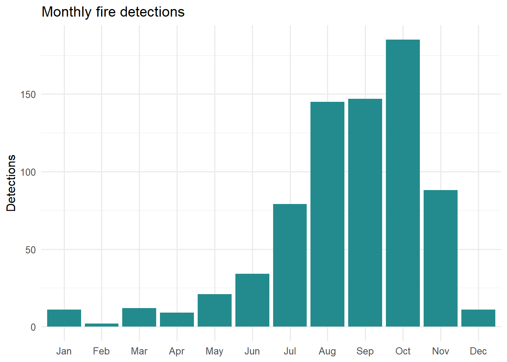
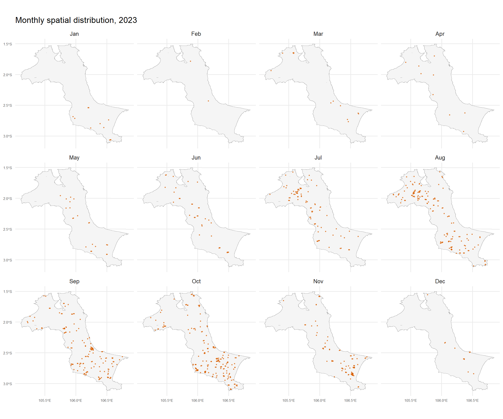
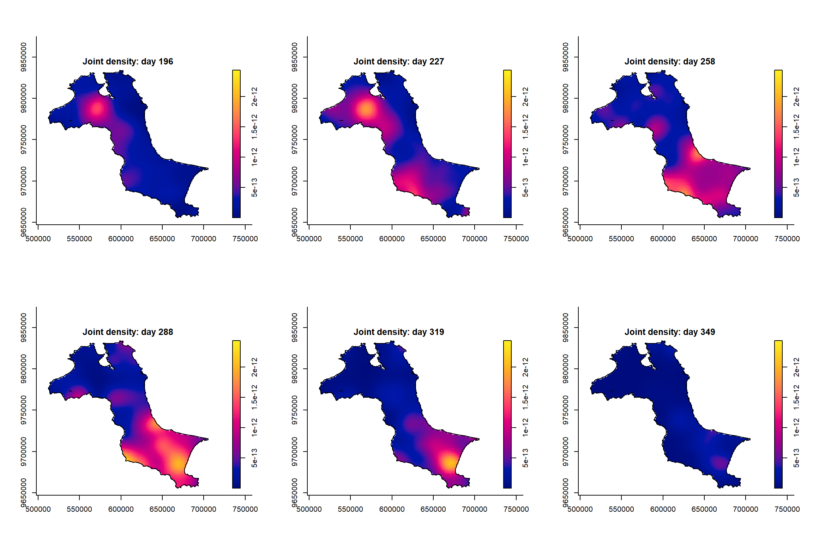
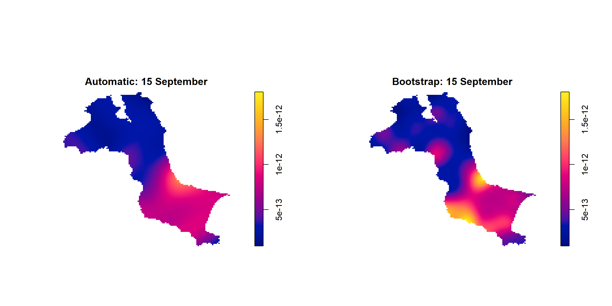
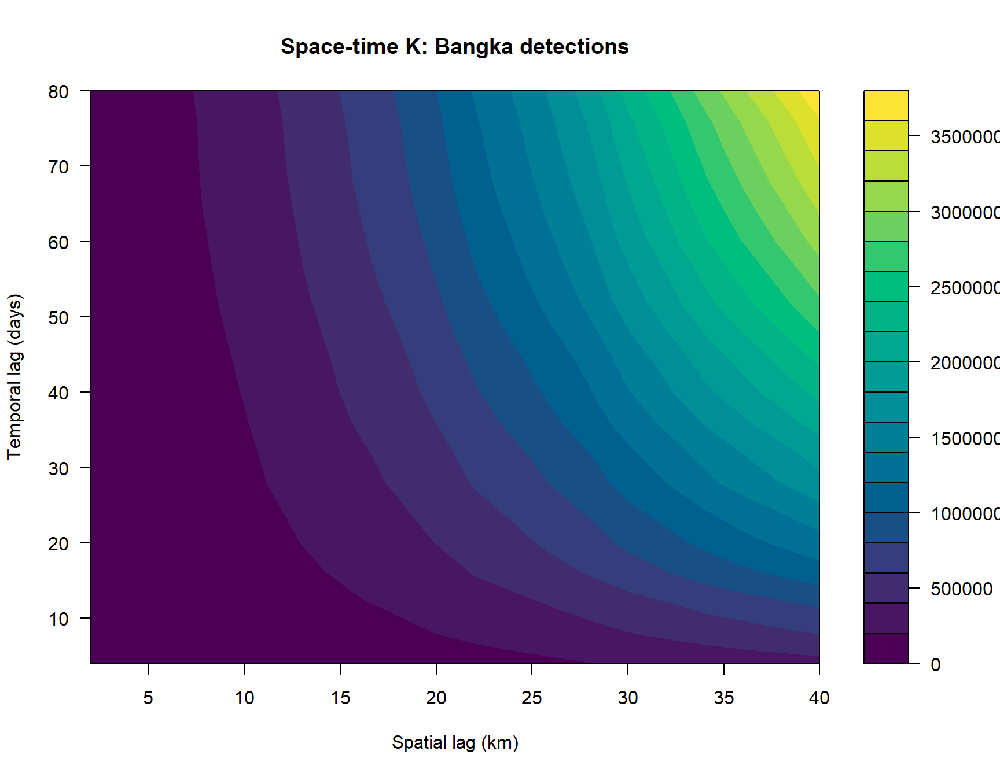
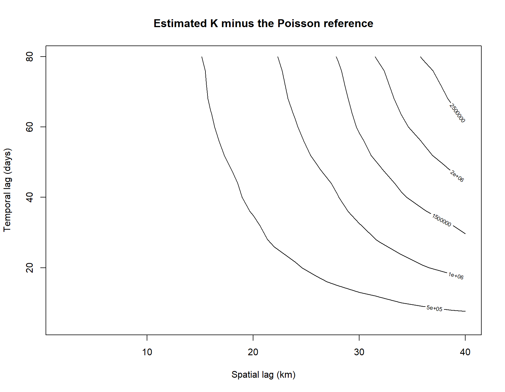

Show code
library(sf)
library(spatstat)
library(sparr)
library(tidyverse)
library(lubridate)
library(knitr)
theme_set(theme_minimal(base_size = 12))JUNCHEN LI
September 9, 2026
September 9, 2026
Following Chapter 6, I explore the locations and timing of MODIS active-fire detections during 2023. The analysis combines spatial data preparation, temporal summaries, space-time kernel density estimation (STKDE), bandwidth selection and the space-time K-function.
My questions are: when are detections most frequent, how does their geographical concentration change through the year, and what can the joint spatial and temporal pattern tell us? Satellite detections are observations of thermal anomalies, not necessarily distinct fires or confirmed forest fires.
The chapter attributes the fire archive to NASA FIRMS and the administrative boundaries to Indonesia Geospatial. The local files were retrieved on 9 September 2026 from a public course data mirror. They were not downloaded directly from NASA in this run.
The mirror covers the whole province. I extract its largest connected land polygon, Bangka main island, whose geographical extent matches the chapter and intersects 297 administrative units. Belitung and smaller islands are excluded. The resulting archive has 744 detections, compared with 741 in the chapter. The exact reason for the three-record difference is unverified; no records were discarded simply to reproduce the textbook count.
| Local file | Role |
|---|---|
data/rawdata/fire_archive_M-C61_802038.csv |
Unmodified 2023 MODIS archive |
data/rawdata/Kepulauan_Bangka_Belitung.* |
Original shapefile and companion files |
data/forestfires.csv |
Detections within Bangka main island |
data/bangka_window.gpkg |
Derived study window in EPSG:32748 |
data/prepare-data.R |
Recreates the two derived datasets |
UTM zone 48S (EPSG:32748) expresses distances in metres. An observation window should represent the region under study: including the sea would change both the intensity estimate and the interpretation of clustering.
kbb_sf <- st_read("data/bangka_window.gpkg", quiet = TRUE)
kbb_owin <- as.owin(st_geometry(kbb_sf))
fire <- read_csv("data/forestfires.csv", show_col_types = FALSE) |>
mutate(acq_date = as.Date(acq_date),
DayofYear = yday(acq_date), Month_num = month(acq_date),
Month_fac = factor(Month_num, levels = 1:12, labels = month.abb))
stopifnot(all(year(fire$acq_date) == 2023),
all(is.finite(fire$longitude)), all(is.finite(fire$latitude)))
fire_sf <- st_as_sf(fire, coords = c("longitude", "latitude"),
crs = 4326, remove = FALSE) |> st_transform(32748)
xy <- st_coordinates(fire_sf)
stopifnot(all(inside.owin(xy[,1], xy[,2], kbb_owin)))
tibble(Detections = nrow(fire), First = min(fire$acq_date),
Last = max(fire$acq_date), Area_km2 = area.owin(kbb_owin)/1e6,
Repeated_XY = sum(duplicated(xy))) |> kable(digits = 2)| Detections | First | Last | Area_km2 | Repeated_XY |
|---|---|---|---|---|
| 744 | 2023-01-10 | 2023-12-18 | 11533.63 | 0 |
Repeated locations can represent observations on different dates; a repeated coordinate alone would not justify deleting an event.
Counts include months with zero detections. A count measures observations recorded by the sensor; cloud cover, revisit frequency and repeated observations can influence it.

The largest monthly total is in Oct, with 185 detections, or 24.9% of this study’s annual total.
ggplot() +
geom_sf(data = kbb_sf, fill = "grey96", colour = "grey65", linewidth = .2) +
geom_sf(data = fire_sf, colour = "#d95f02", size = .5, alpha = .7) +
facet_wrap(~Month_fac, ncol = 4, drop = FALSE) +
labs(title = "Monthly spatial distribution, 2023") +
theme(axis.text = element_text(size = 6))
The event time becomes the numeric mark attached to each location. Month numbers provide a coarse time scale; day-of-year values preserve daily timing.
Marked planar point pattern: 744 points
Average intensity 6.450701e-08 points per square unit
Coordinates are given to 10 decimal places
marks are numeric, of type 'double'
Summary:
Min. 1st Qu. Median Mean 3rd Qu. Max.
10.0 214.5 258.0 245.9 286.2 352.0
Window: polygonal boundary
7 separate polygons (6 holes)
vertices area relative.area
polygon 1 47394 1.15336e+10 1.00e+00
polygon 2 (hole) 3 -3.92817e-01 -3.41e-11
polygon 3 (hole) 3 -1.87872e-01 -1.63e-11
polygon 4 (hole) 3 -1.88553e+01 -1.63e-09
polygon 5 (hole) 3 -6.78103e-02 -5.88e-12
polygon 6 (hole) 3 -3.44286e-02 -2.99e-12
polygon 7 (hole) 3 -1.96684e-03 -1.71e-13
enclosing rectangle: [512066.8, 705559.4] x [9655398, 9834006] units
(193500 x 178600 units)
Window area = 11533600000 square units
Fraction of frame area: 0.334STKDE smooths each event in both space and time. The spatial bandwidth controls how far an event contributes geographically; the temporal bandwidth controls how much neighbouring times are blended.
| Spatial_bandwidth_m | Temporal_bandwidth_months |
|---|---|
| 15097.84 | 0.03 |
Integer months are a coarse approximation to continuous time. Automatic bandwidth selection on tied month values may produce very little smoothing between months; daily marks are preferable for examining change within a month.
The observation interval is the full 2023 calendar year, including days without detections. The returned bandwidths are estimated from the local data, so they can differ from the chapter’s values.
Spatiotemporal Kernel Density Estimate
Bandwidths
h = 15097.84 (spatial)
lambda = 6.2712 (temporal)
No. of observations
744
Spatial bound
Type: polygonal
2D enclosure: [512066.8, 705559.4] x [9655398, 9834006]
Temporal bound
[1, 365]
Evaluation
128 x 128 x 365 trivariate lattice
Density range: [2.313361e-29, 2.749113e-12]The bootstrap selector jointly chooses spatial and temporal smoothing parameters. Its numerical integration uses a 64 by 64 spatial grid and 64 temporal evaluation points. The final density is evaluated on a finer spatial grid and every day of the year.
set.seed(1234)
bandwidths <- BOOT.spattemp(fire_yday_owin, tlim = c(1,365),
sres = 64, tres = 64, verbose = FALSE)
st_boot <- spattemp.density(fire_yday_owin,
h = unname(bandwidths[1]),
lambda = unname(bandwidths[2]),
tlim = c(1,365), sres = 128, verbose = FALSE)
tibble(Method = c("Automatic", "Bootstrap"),
Spatial_m = c(st_day$h, st_boot$h),
Temporal_days = c(st_day$lambda, st_boot$lambda)) |> kable(digits = 2)| Method | Spatial_m | Temporal_days |
|---|---|---|
| Automatic | 15097.84 | 6.27 |
| Bootstrap | 8963.05 | 18.90 |

The common colour range supports comparison between dates. In the fitted surfaces, July and August show stronger concentration in the northwest; October and November shift toward the south and southeast. These are joint probability-density surfaces, measured per square metre per day, not burned area or a count per pixel. Multiplying by the event count converts the joint density into an estimated detection intensity.
comparison_day <- selected_days[3]
surfaces <- list(st_day$z[[as.character(comparison_day)]],
st_boot$z[[as.character(comparison_day)]])
common_range <- range(unlist(lapply(surfaces, function(z) z$v)), na.rm = TRUE)
par(mfrow = c(1,2))
plot(surfaces[[1]], zlim = common_range, main = "Automatic: 15 September")
plot(surfaces[[2]], zlim = common_range, main = "Bootstrap: 15 September")
I convert coordinates to kilometres so that spatial lags are readable. The time coordinate remains day of year. This example follows the chapter’s rectangular-window K analysis: the bounding rectangle includes sea, unlike the polygon window used for KDE. That difference limits the comparison.
Although the function supports an inhomogeneous estimator, this call omits lambda and therefore uses the homogeneous estimator. Theoretical Poisson values are a reference, not a simulation envelope or a significance test.


Positive differences identify lags with excess close pairs relative to the homogeneous reference. Seasonal variation and unequal spatial intensity can also generate this pattern. Establishing space-time dependence would require an appropriate null model, for example a time-permutation test, and a study-window treatment consistent with the land boundary.
Adding a date changes what a hotspot means: a location can have a high annual total even if detections concentrate in a short season. I would check the daily and monthly charts together before deciding which dates to compare. Bandwidth and boundary choices also change the surfaces, so these choices should accompany any interpretation. MODIS detections alone cannot establish fire causes, burned area or the number of independent incidents.
help("BOOT.spattemp", package="sparr") and help("STIKhat", package="stpp").---
title: "Hands-on Exercise 3: Spatio-Temporal Point Pattern Analysis"
author: "JUNCHEN LI"
date: "September 9, 2026"
date-modified: "last-modified"
format:
html:
toc: true
toc-depth: 3
code-fold: true
code-summary: "Show code"
code-tools: true
editor: source
execute:
echo: true
warning: false
message: false
freeze: auto
---
# Overview
Following [Chapter 6](https://r4gdsa.netlify.app/chap06), I explore the locations and timing of MODIS active-fire detections during 2023. The analysis combines spatial data preparation, temporal summaries, space-time kernel density estimation (STKDE), bandwidth selection and the space-time K-function.
My questions are: when are detections most frequent, how does their geographical concentration change through the year, and what can the joint spatial and temporal pattern tell us? Satellite detections are observations of thermal anomalies, not necessarily distinct fires or confirmed forest fires.
# 1 Data and reproducibility
The chapter attributes the fire archive to [NASA FIRMS](https://firms.modaps.eosdis.nasa.gov/download/) and the administrative boundaries to [Indonesia Geospatial](https://www.indonesia-geospasial.com/2023/05/download-shapefile-batas-administrasi.html). The local files were retrieved on 9 September 2026 from a [public course data mirror](https://github.com/xhwang0226/ISSS626/tree/main/Hands-on/Hands-on_Ex05/data). They were not downloaded directly from NASA in this run.
The mirror covers the whole province. I extract its largest connected land polygon, Bangka main island, whose geographical extent matches the chapter and intersects 297 administrative units. Belitung and smaller islands are excluded. The resulting archive has **744 detections**, compared with 741 in the chapter. The exact reason for the three-record difference is unverified; no records were discarded simply to reproduce the textbook count.
| Local file | Role |
|---|---|
| `data/rawdata/fire_archive_M-C61_802038.csv` | Unmodified 2023 MODIS archive |
| `data/rawdata/Kepulauan_Bangka_Belitung.*` | Original shapefile and companion files |
| `data/forestfires.csv` | Detections within Bangka main island |
| `data/bangka_window.gpkg` | Derived study window in EPSG:32748 |
| `data/prepare-data.R` | Recreates the two derived datasets |
## Loading packages
```{r}
library(sf)
library(spatstat)
library(sparr)
library(tidyverse)
library(lubridate)
library(knitr)
theme_set(theme_minimal(base_size = 12))
```
# 2 Preparing the study window and events
UTM zone 48S (EPSG:32748) expresses distances in metres. An observation window should represent the region under study: including the sea would change both the intensity estimate and the interpretation of clustering.
```{r}
kbb_sf <- st_read("data/bangka_window.gpkg", quiet = TRUE)
kbb_owin <- as.owin(st_geometry(kbb_sf))
fire <- read_csv("data/forestfires.csv", show_col_types = FALSE) |>
mutate(acq_date = as.Date(acq_date),
DayofYear = yday(acq_date), Month_num = month(acq_date),
Month_fac = factor(Month_num, levels = 1:12, labels = month.abb))
stopifnot(all(year(fire$acq_date) == 2023),
all(is.finite(fire$longitude)), all(is.finite(fire$latitude)))
fire_sf <- st_as_sf(fire, coords = c("longitude", "latitude"),
crs = 4326, remove = FALSE) |> st_transform(32748)
xy <- st_coordinates(fire_sf)
stopifnot(all(inside.owin(xy[,1], xy[,2], kbb_owin)))
tibble(Detections = nrow(fire), First = min(fire$acq_date),
Last = max(fire$acq_date), Area_km2 = area.owin(kbb_owin)/1e6,
Repeated_XY = sum(duplicated(xy))) |> kable(digits = 2)
```
Repeated locations can represent observations on different dates; a repeated coordinate alone would not justify deleting an event.
# 3 Exploring space and time
## Overall point map
```{r}
#| fig-width: 9
#| fig-height: 7
ggplot() +
geom_sf(data = kbb_sf, fill = "#f1f5f9", colour = "#64748b") +
geom_sf(data = fire_sf, aes(colour = DayofYear), size = .8, alpha = .7) +
scale_colour_viridis_c(option = "C") +
labs(title = "MODIS detections on Bangka, 2023", colour = "Day of year")
```
## Monthly counts and maps
Counts include months with zero detections. A count measures observations recorded by the sensor; cloud cover, revisit frequency and repeated observations can influence it.
```{r}
monthly <- fire |> count(Month_num) |>
complete(Month_num = 1:12, fill = list(n = 0)) |>
mutate(Month = factor(month.abb[Month_num], levels = month.abb))
ggplot(monthly, aes(Month, n)) +
geom_col(fill = "#238b8d") +
labs(title = "Monthly fire detections", x = NULL, y = "Detections")
```
The largest monthly total is in **`r as.character(monthly$Month[which.max(monthly$n)])`**, with **`r max(monthly$n)`** detections, or **`r round(100*max(monthly$n)/nrow(fire),1)`%** of this study's annual total.
```{r}
#| fig-width: 12
#| fig-height: 10
ggplot() +
geom_sf(data = kbb_sf, fill = "grey96", colour = "grey65", linewidth = .2) +
geom_sf(data = fire_sf, colour = "#d95f02", size = .5, alpha = .7) +
facet_wrap(~Month_fac, ncol = 4, drop = FALSE) +
labs(title = "Monthly spatial distribution, 2023") +
theme(axis.text = element_text(size = 6))
```
# 4 Marked point patterns
The event time becomes the numeric mark attached to each location. Month numbers provide a coarse time scale; day-of-year values preserve daily timing.
```{r}
fire_month_owin <- ppp(xy[,1], xy[,2], window = kbb_owin,
marks = fire$Month_num)
fire_yday_owin <- ppp(xy[,1], xy[,2], window = kbb_owin,
marks = fire$DayofYear)
summary(fire_yday_owin)
```
# 5 Monthly STKDE
STKDE smooths each event in both space and time. The spatial bandwidth controls how far an event contributes geographically; the temporal bandwidth controls how much neighbouring times are blended.
```{r}
#| cache: true
st_month <- spattemp.density(fire_month_owin, tlim = c(1,12),
sres = 128, verbose = FALSE)
tibble(Spatial_bandwidth_m = st_month$h,
Temporal_bandwidth_months = st_month$lambda) |> kable(digits = 3)
```
Integer months are a coarse approximation to continuous time. Automatic bandwidth selection on tied month values may produce very little smoothing between months; daily marks are preferable for examining change within a month.
```{r}
#| fig-width: 12
#| fig-height: 8
par(mfrow = c(2,3))
for (m in 7:12) {
plot(st_month, m, override.par = FALSE, fix.range = TRUE,
main = paste("Joint density:", month.abb[m]))
}
par(mfrow = c(1,1))
```
# 6 Daily STKDE and bandwidth selection
## Automatic daily bandwidth
The observation interval is the full 2023 calendar year, including days without detections. The returned bandwidths are estimated from the local data, so they can differ from the chapter's values.
```{r}
#| cache: true
st_day <- spattemp.density(fire_yday_owin, tlim = c(1,365),
sres = 128, verbose = FALSE)
summary(st_day)
```
## Bootstrap bandwidth selection
The bootstrap selector jointly chooses spatial and temporal smoothing parameters. Its numerical integration uses a 64 by 64 spatial grid and 64 temporal evaluation points. The final density is evaluated on a finer spatial grid and every day of the year.
```{r}
#| cache: true
set.seed(1234)
bandwidths <- BOOT.spattemp(fire_yday_owin, tlim = c(1,365),
sres = 64, tres = 64, verbose = FALSE)
st_boot <- spattemp.density(fire_yday_owin,
h = unname(bandwidths[1]),
lambda = unname(bandwidths[2]),
tlim = c(1,365), sres = 128, verbose = FALSE)
tibble(Method = c("Automatic", "Bootstrap"),
Spatial_m = c(st_day$h, st_boot$h),
Temporal_days = c(st_day$lambda, st_boot$lambda)) |> kable(digits = 2)
```
```{r}
#| fig-width: 12
#| fig-height: 8
selected_days <- yday(as.Date(paste0("2023-", 7:12, "-15")))
par(mfrow = c(2,3))
for (d in selected_days) {
plot(st_boot, d, override.par = FALSE, fix.range = TRUE,
main = paste("Joint density: day", d))
}
par(mfrow = c(1,1))
```
The common colour range supports comparison between dates. In the fitted surfaces, July and August show stronger concentration in the northwest; October and November shift toward the south and southeast. These are joint probability-density surfaces, measured per square metre per day, not burned area or a count per pixel. Multiplying by the event count converts the joint density into an estimated detection intensity.
## Comparing smoothing on the same date
```{r}
#| fig-width: 12
#| fig-height: 6
comparison_day <- selected_days[3]
surfaces <- list(st_day$z[[as.character(comparison_day)]],
st_boot$z[[as.character(comparison_day)]])
common_range <- range(unlist(lapply(surfaces, function(z) z$v)), na.rm = TRUE)
par(mfrow = c(1,2))
plot(surfaces[[1]], zlim = common_range, main = "Automatic: 15 September")
plot(surfaces[[2]], zlim = common_range, main = "Bootstrap: 15 September")
par(mfrow = c(1,1))
```
# 7 Space-time K-function
## Constructing the stpp object
I convert coordinates to kilometres so that spatial lags are readable. The time coordinate remains day of year. This example follows the chapter's rectangular-window K analysis: the bounding rectangle includes sea, unlike the polygon window used for KDE. That difference limits the comparison.
```{r}
fire_stpp <- stpp::as.3dpoints(data.frame(
x = xy[,1]/1000, y = xy[,2]/1000, t = as.integer(fire$DayofYear)))
class(fire_stpp)
```
## Estimating K over spatial and temporal lags
```{r}
#| cache: true
kbb_stik <- stpp::STIKhat(fire_stpp, t.region = c(1,365),
dist = seq(0,40,by = 2),
times = seq(0,80,by = 4),
correction = "isotropic")
```
Although the function supports an inhomogeneous estimator, this call omits `lambda` and therefore uses the homogeneous estimator. Theoretical Poisson values are a reference, not a simulation envelope or a significance test.
```{r}
#| fig-width: 9
#| fig-height: 7
filled.contour(kbb_stik$dist, kbb_stik$times, kbb_stik$Khat,
color.palette = hcl.colors,
xlab = "Spatial lag (km)", ylab = "Temporal lag (days)",
main = "Space-time K: Bangka detections")
```
```{r}
#| fig-width: 9
#| fig-height: 7
excess <- kbb_stik$Khat - kbb_stik$Ktheo
contour(kbb_stik$dist, kbb_stik$times, excess,
xlab = "Spatial lag (km)", ylab = "Temporal lag (days)",
main = "Estimated K minus the Poisson reference")
```
Positive differences identify lags with excess close pairs relative to the homogeneous reference. Seasonal variation and unequal spatial intensity can also generate this pattern. Establishing space-time dependence would require an appropriate null model, for example a time-permutation test, and a study-window treatment consistent with the land boundary.
# 8 Learning reflection
Adding a date changes what a hotspot means: a location can have a high annual total even if detections concentrate in a short season. I would check the daily and monthly charts together before deciding which dates to compare. Bandwidth and boundary choices also change the surfaces, so these choices should accompany any interpretation. MODIS detections alone cannot establish fire causes, burned area or the number of independent incidents.
# References
- [Chapter 6: Spatio-Temporal Point Patterns Analysis](https://r4gdsa.netlify.app/chap06)
- [NASA FIRMS](https://firms.modaps.eosdis.nasa.gov/download/)
- [Data mirror used in this exercise](https://github.com/xhwang0226/ISSS626/tree/main/Hands-on/Hands-on_Ex05/data)
- [sparr: Spatiotemporal density estimation](https://tilmandavies.github.io/sparr/reference/spattemp.density.html)
- R package documentation: `help("BOOT.spattemp", package="sparr")` and `help("STIKhat", package="stpp")`.